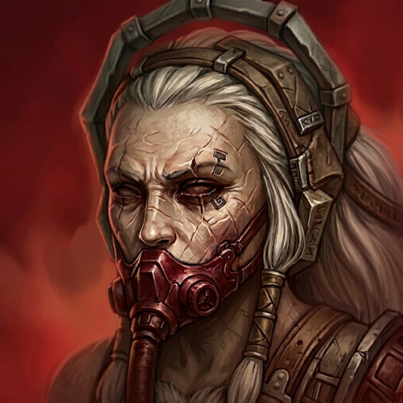

The kit
- P
Stigmata
Damage redirected onto you is Toll: it ignores armour, shields and all reduction. Every 60 Toll grants a Grudge, each adding attack damage and increasing The Reckoning.
- Q
Knotted Cord
Swing a weighted cord in an arc for damage and a brief slow, with bonus damage to minions.
- W
Share the Wound
Tie a cord to an ally for 8s. A third of the damage they take is redirected onto you as Toll. Beyond its range the cord goes slack and redirects nothing.
- E
Take My Place
Dash to your tethered ally and swap places, damaging and slowing enemies you pass through.
- R
The Reckoning
For 3.5s all damage dealt to allies near you is redirected onto you, and Grudge builds twice as fast. It then detonates, damaging and slowing enemies around you for a share of the Toll taken. Dying during it detonates at 60%.